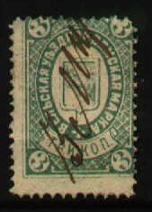
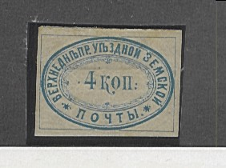
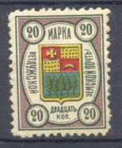
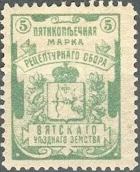
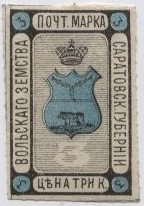
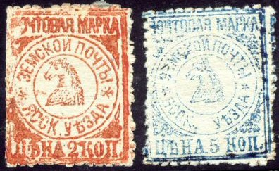
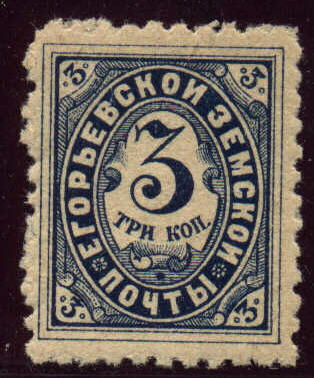

Return To Catalogue - Go to Zemstvos overview - Russia
Note: on my website many of the
pictures can not be seen! They are of course present in the
catalogue;
contact me if you want to purchase it.


3 k green (perforated or imperforated) 3 k red (1888, perforated or imperforated) 3 k blue (1889) 3 k violet (1891)

3 k red 3 k blue (1893, exists imperforated) 3 k black, blue and red (1895, exists imperforated) 3 k black, red and blue (1897)

3 k blue 3 k green (exists imperforated) 3 k red (1905) 3 k brown (1911) 6 k green


4 k black (rare) 4 k black (smaller size, 2 types)

4 k blue (1873) 4 k lilac (1876)
2 k brown
2 k red 10 k blue and red (1894)


2 k blue 2 k black and blue (1902)
(Sorry, no pictures available yet)
10 k black, blue and red 10 k black, blue and red (slightly different type)
1/2 k brown 1 k green 2 k blue 5 k red
1/2 k black and yellow 1 k black and green 5 k black and red


1/2 k black on brown 1/2 k black on grey 1 k black on green 2 k black on yellow 2 k black on blue 5 k black on violet 5 k black on red


3 k brown, gold and brown 10 k black, red, gold and green

3 k brown 3 k brown on lilac


1 k brown, red, yellow, blue and green 2 k blue, black, red, green and yellow 3 k black, green, yellow, red and green 5 k orange, black, red, green and yellow 10 k olive, green, yellow, red, and blue 20 k lilac, black, red, green and yellow

2 k brown

2 k blue



5 k black, yellow and red


3 k black and blue (2 types)
2 k black and green
(Reduced size)
2 k green
2 k red 5 k red 5 k blue



3 k blue 3 k black

(Reduced size)
3 k red 3 k blue

{kind=link}
{kind=link}